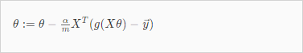

ex2-1: Logistic Regression
0. ex2.m
약식
%% ============ Part 2: Compute Cost and Gradient ============
% Add intercept term to x and X_test
X = [ones(m, 1) X];
% Initialize fitting parameters
initial_theta = zeros(n + 1, 1);
% Compute and display initial cost and gradient
[cost, grad] = costFunction(initial_theta, X, y);
%% ============= Part 3: Optimizing using fminunc =============
% Set options for fminunc
options = optimset('GradObj', 'on', 'MaxIter', 400);
% Run fminunc to obtain the optimal theta
% This function will return theta and the cost
[theta, cost] = ...
fminunc(@(t)(costFunction(t, X, y)), initial_theta, options);
% Plot Boundary
plotDecisionBoundary(theta, X, y);
%% ============== Part 4: Predict and Accuracies ==============
prob = sigmoid([1 45 85] * theta);
fprintf(['for a student with scores 45 and 85, we predict an admission ' ...
'probability of %f\n'], prob);
% Compute accuracy on our training set
p = predict(theta, X);
fprintf('Train Accuracy: %f\n', mean(double(p == y)) * 100);
1. plotData.m
function plotData(X, y)
% Create New Figure
figure; hold on;
% ====================== YOUR CODE HERE ======================
% find indeces of positive and negative examples
pos = find (y == 1); neg = find(y == 0);
%plot Examples
plot(X(pos,1), X(pos, 2), 'k+', 'LineWidth', 2, 'MarkerSize', 7);
plot(X(neg,1), X(neg, 2), 'ko', 'MarkerFaceColor', 'y', 'MarkerSize', 7);
% =========================================================================
hold off;
end
2. sigmoid.m
function g = sigmoid(z)
%SIGMOID Compute sigmoid function
% g = SIGMOID(z) computes the sigmoid of z.
% You need to return the following variables correctly
g = zeros(size(z));
% ====================== YOUR CODE HERE ======================
% Instructions: Compute the sigmoid of each value of z (z can be a matrix,
% vector or scalar).
g = 1 ./ (1 + e .^ -z);
% =============================================================
end
3. costFuncion.m
function [J, grad] = costFunction(theta, X, y)
% Initialize some useful values
m = length(y); % number of training examples
% You need to return the following variables correctly
J = 0;
grad = zeros(size(theta));
% ====================== YOUR CODE HERE ======================
nr_itter = 1000; % 100해도 결과같음
alpha = 1; % 때려맞춤
max_n = size(X,2);
hx = X * theta;
gx = sigmoid(hx);
% Cost function J
pos = -y .* log(gx);
neg = (1 - y) .* log(1 - gx);
J = (1 / m) * sum(pos - neg);
% Gradient descent
for i=1:nr_itter
for n=1:max_n
grad(n,1) = (alpha / m) * sum((gx - y) .* X(:,n));
end
end
% =============================================================
end
이건 틀린답이다. fminunc() 를 사용한다면 itteration과 alpha 계산이 전혀 필요없다. 따라서 vectorized된 J()와 J()의 미분계수만 구하면 된다. 답은 아래와 같다.
다음 두개의 vectorized 공식을 사용해야 한다.

-> sum() 사용하지 말고 traspose 해서 곱하면 된다. 둘다 결과물의 크기는 1X1이 됨.
% Cost function J
pos = -y' * log(gx);
neg = (1 - y)' * log(1 - gx);
J = (1 / m) * (pos - neg);
% Gradient descent
grad = (1/m) * X' * (gx - y);
4. predict.m
function p = predict(theta, X)
% p = PREDICT(theta, X) computes the predictions for X using a
% threshold at 0.5 (i.e., if sigmoid(theta`*x) >= 0.5, predict 1)
m = size(X, 1); % Number of training examples
% You need to return the following variables correctly
p = zeros(m, 1);
% ====================== YOUR CODE HERE ======================
gx = sigmoid(X * theta);
for i=1:m
if gx(i,1) >= 0.5
p(i,1) = 1;
else
p(i,1) = 0;
end
% =========================================================================
end